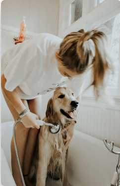
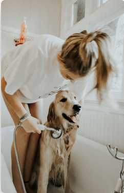

Keeping and
Caring for Animals
Mariposa SPCA is a non-profit working to keep and care for animals and enforcing laws relating to the cruelty of animals.
The general purpose, for which this corporation is formed, is to provide an arena for local education and humane treatment to animals and to foster local interest in such a society.
Donate Now Learn More Finding a
Forever Friend
Millions of companion animals in shelters across America are just waiting for a special home like yours. Navigating the adoption process isn't as hard as you think. We can help you find the perfect pet and discover how amazing adopting a pet can be.
An animal shelter or a rescue group is the best source for a new pet, and our pet-care experts have compiled all the information you'll need to find your nearest group, select a pet who matches your lifestyle, and more.
Start adopting ->“The Mariposa Team was invaluable to my adoption process, providing all the necesary matierals to ensure a smooth and safe process.”
Fido, Pedigree Pug
 
